Más sobre mi
Estefano Oscanoa
¡Hola a todos! Soy Estefano, estudiante de Comunicación Audiovisual en TLS y editor audiovisual.
Amante de la música y el cine, aquí compartiré mis aprendizajes del curso de Laboratorio de Innovación.
¡Únete a este emocionante viaje de descubrimiento e innovación!
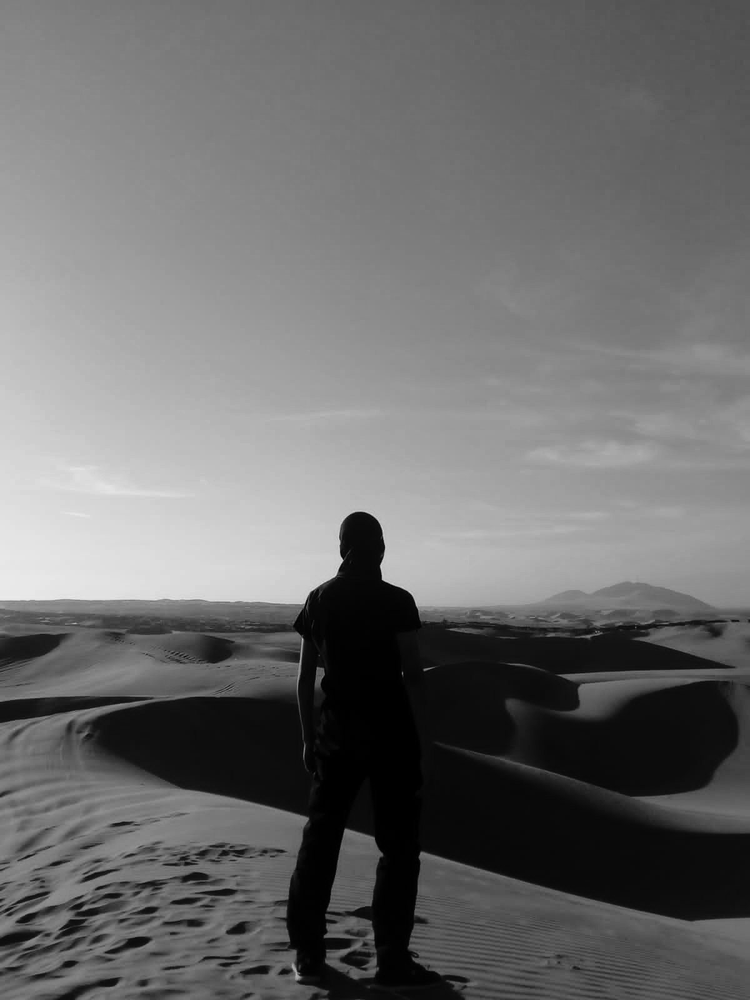
Marzo, 2024
PRIMERA
CLASE
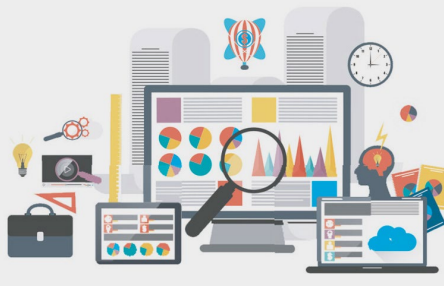
En esta clase, exploramos tres conceptos fundamentales: bitácoras, cajas negras y Visual Studio Code. Sumergiéndonos en el corazón de la informática y el desarrollo de software.
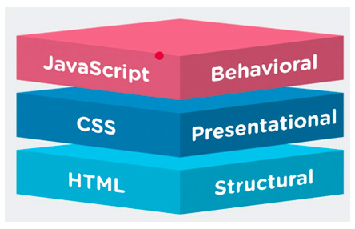
En esta clase, nos sumergimos en el diseño web con HTML, CSS y JavaScript, centrándonos en los conceptos esenciales y utilizando Visual Studio Code para potenciar nuestra creatividad. ¡Fue un viaje emocionante hacia el mundo del desarrollo web!.
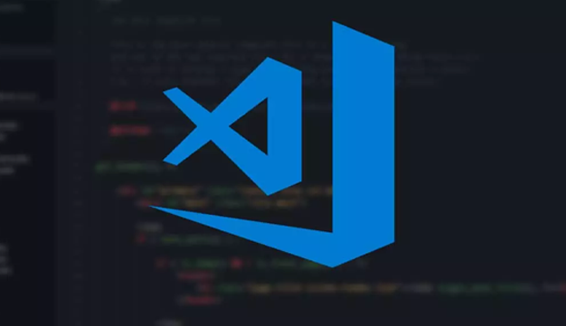
Hicimos un breve repaso de las dos anteriores sesiones y ya nos adentramos de lleno a HTML, Visual Studio Code aprendiendo desde cero cómo usar el interfaz de manera práctica y a la vez complementándola con la forma teórica, aprendiendo sobre los códigos para el diseño web, etiquetas, tipos de lista y atributos.
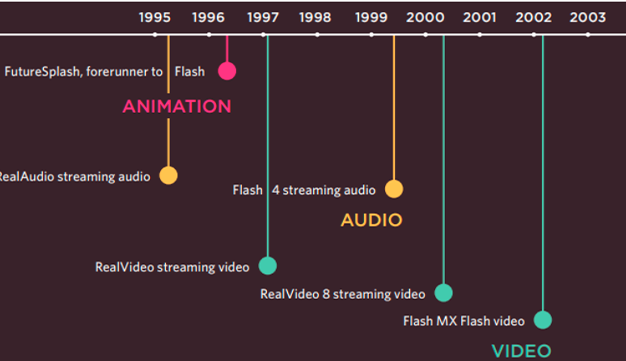
Seguimos con la clase anterior, complementándolo con los conceptos sobre cómo añadir una imagen o video y los diferentes tipos de formatos y resoluciones que se pueden adaptar y fluir mejor en nuestra página web. Conocemos otras dos etiquetas importantes como div y el span y por último vídeo alternativo y segmento de vídeo.
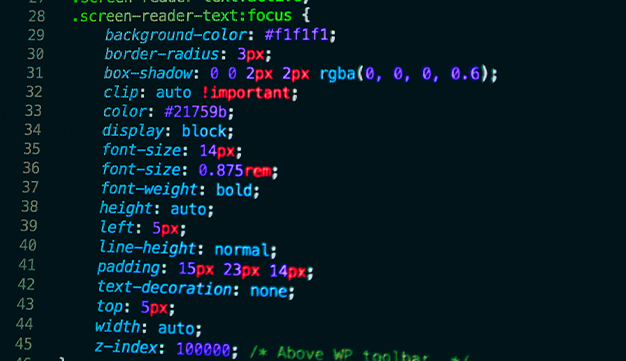
En esta clase, conocimos otro programa que va a trabajar de la mano, que es CSS. Vimos qué es esta sección y cómo se puede interpretar la información a HTML, la Regla CSS y las diferentes etiquetas atributos para estas dos.
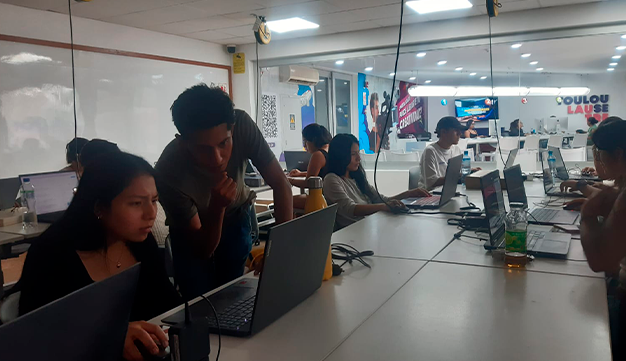
Aprovechamos esta clase para corregir presencialmente todas las dudas y el feedback que se nos dio en la sesión 3, sobre nuestra bitácora personal, para poder hacer una mejor entrega a tiempo completo.
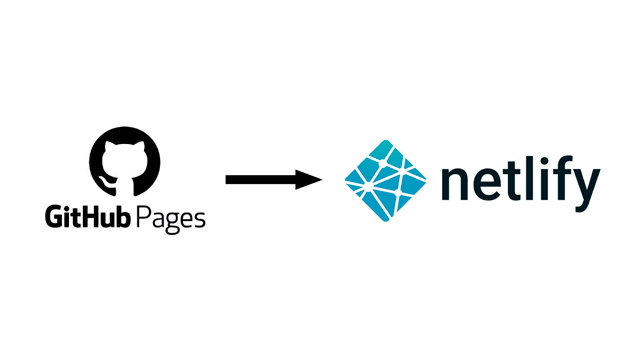
En esta sesión vimos dos páginas nuevas que son GitHub, una plataforma que permite a los desarrolladores almacenar, gestionar y compartir su código de forma colaborativa, y Netlify, una plataforma que facilita la creación y el alojamiento de sitios web y aplicaciones estáticas.
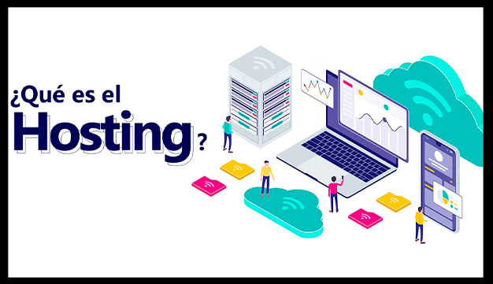
Durante esta sesión, exploré diversos conceptos, incluyendo el uso de Tinkercad y otras herramientas. También comprendí el concepto de hosting e interactuamos con los códigos que conectan las computadoras en Toulouse.
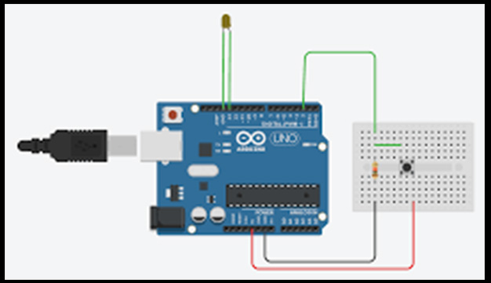
En esta clase, aprendí a utilizar Tinkercad y vi ejemplos de proyectos con Arduino. El profesor realizó ejercicios para explicarnos en detalle el propósito de la página y ayudarnos a comprender mejor su uso.
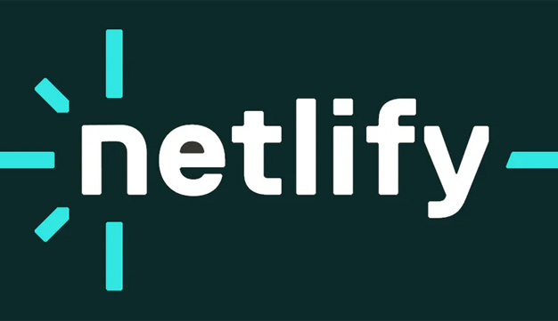
En esta sesión, recibimos revisión y feedback sobre nuestras páginas web, y mantuvimos una bitácora personal. Además, el profesor me ayudó a convertir mi proyecto en un enlace para facilitar la accesibilidad.
Abril, 2024
UNDECIMA
CLASE
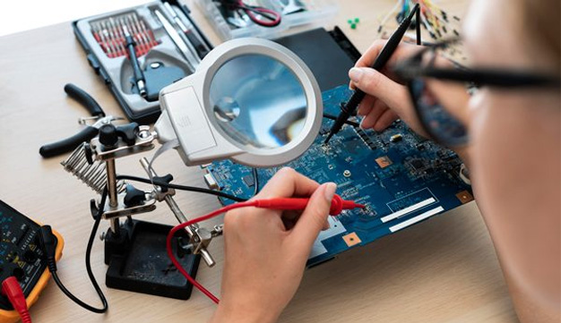
Entendí la relación entre la robótica y la electrónica, así como sus beneficios. También estudiamos el Arduino y sus componentes. La verdad, esta clase fue muy interesante porque la robótica me llama mucho la atención.
Abril, 2024
DUODÉCIMA
CLASE
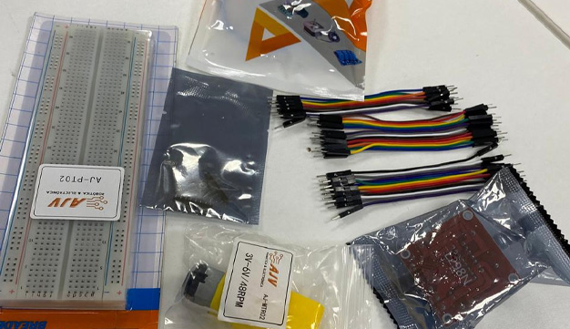
En esta clase hablamos sobre los materiales para nuestro proyecto. El profesor nos dio referencias y nos mostró algunas tiendas donde podríamos conseguir los materiales.
Abril, 2024
DECIMOTERCERA
CLASE
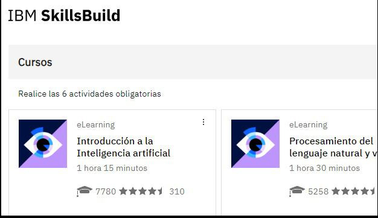
En esta clase virtual, nos registramos en una página web con módulos para responder encuestas sobre los temas que íbamos aprendiendo a lo largo del curso. Lo que más me llamó la atención fue el módulo sobre la inteligencia artificial.
Abril, 2024
DECIMOCUARTA
CLASE
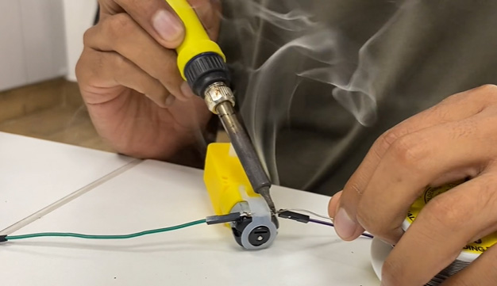
El profesor nos enseñó sobre Arduino, especialmente sobre diagramas de flujo, su estructura, figuras y flechas adecuadas, así como los sensores de Arduino y sus pines.
Abril, 2024
DECIMOQUINTA
CLASE
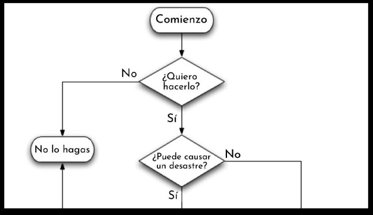
El profesor nos enseñó sobre Arduino, especialmente sobre diagramas de flujo, su estructura, figuras y flechas adecuadas, así como los sensores de Arduino y sus pines.
Abril, 2024
DECIMOSEXTA
CLASE
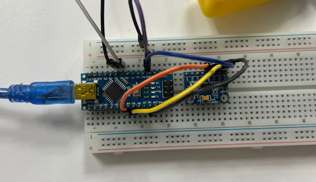
En esta clase, creamos diagramas de flujo que el profesor había escrito en la pizarra, y luego coordiné con mi grupo sobre nuestro proyecto de Arduino.
Abril, 2024
DECIMOSEPTIMA
CLASE
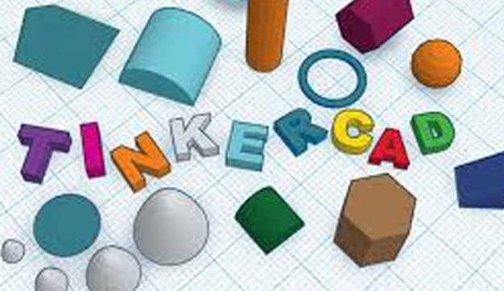
Realizamos flujos de diseño y fabricación digital. Además, el profesor nos mostró algunos trucos en Tinkercad, simulando cubos y esferas.
Abril, 2024
DECIMOOCTAVA
CLASE
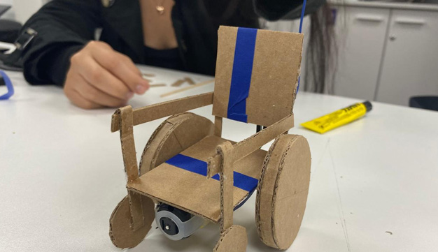
En esta clase, nuestro grupo trajo materiales como cartón, batería, cables, entre otros, así como algunos moldes para montar nuestra propuesta. En este caso, se trató de una simulación para establecer una base para nuestra silla de ruedas.
Abril, 2024
DECIMONOVENA
CLASE
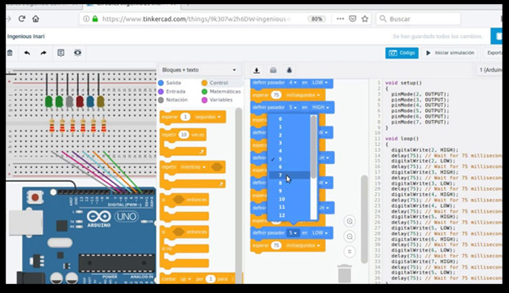
El profesor aclaró las dudas de cada grupo para mejorar algunos detalles en el programa que estamos utilizando para nuestro proyecto. Por ejemplo, nos enseñó cómo crear una librería, conectar pines y configurar el LCD.
Abril, 2024
VIGÉSIMO
CLASE
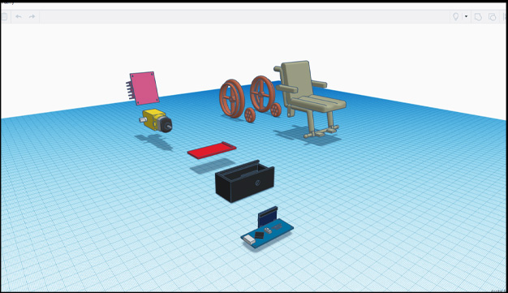
En esta clase, ya habíamos hecho los cortes de cartón y teníamos una pequeña caja para insertar los cables del proyecto. Además, modelamos cada parte de la propuesta en Tinkercad.
Abril, 2024
VIGÉSIMO PRIMERO
CLASE
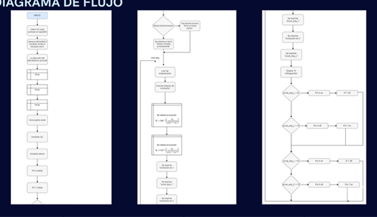
El profesor sugirió cambios para mejorar la viabilidad y funcionamiento de nuestro proyecto. Recomendó ajustar el motor para que las llantas rodaran fácilmente y realizar algunos recortes en el modelado.
Abril, 2024
VIGÉSIMO SEGUNDA
CLASE
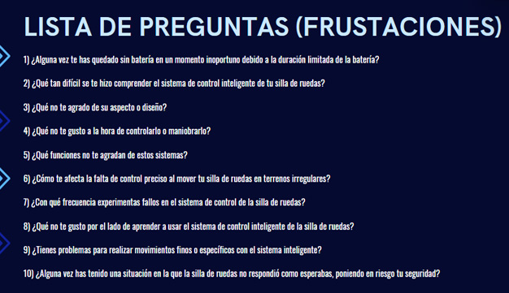
Durante esta clase, formulamos varias preguntas sobre las necesidades y frustraciones de las personas con discapacidades, especialmente aquellas que usan sillas de ruedas, para que puedan aprovechar nuestro proyecto.
Abril, 2024
VIGÉSIMO TERCERA
CLASE
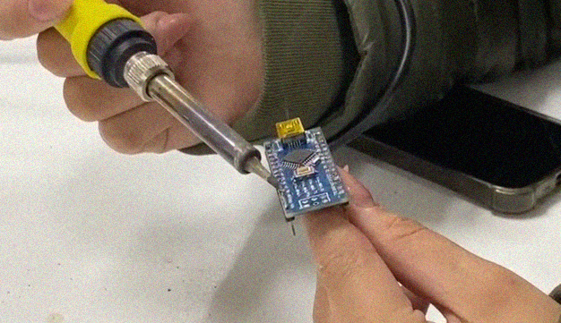
Aquí conectamos algunos cables al puente H L298 y también soldamos los cables con el MPU6050 para que encajaran correctamente.
Abril, 2024
VIGÉSIMO CUARTA
CLASE
La clase fue fascinante ya que el profesor detalló las distintas revoluciones industriales, incluyendo la 4.0 en nuestro caso. Además, exploramos los componentes que se usaban para impulsar las máquinas en la primera revolución industrial.
Abril, 2024
VIGÉSIMO QUINTA
CLASE
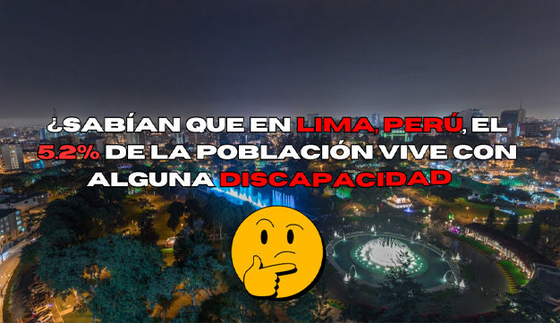
En esta ocasión, creé el spot publicitario y el video que documenta todo el proceso del proyecto, mientras mis compañeras trabajaban en otros aspectos.
Abril, 2024
VIGÉSIMO SEXTA
CLASE
El profesor nos introdujo a la programación de robots y su funcionamiento basado en nuestras decisiones. Además, cubrió los principios fundamentales del tema y la prueba de Turing.
Abril, 2024
VIGÉSIMO SEPTIMA
CLASE
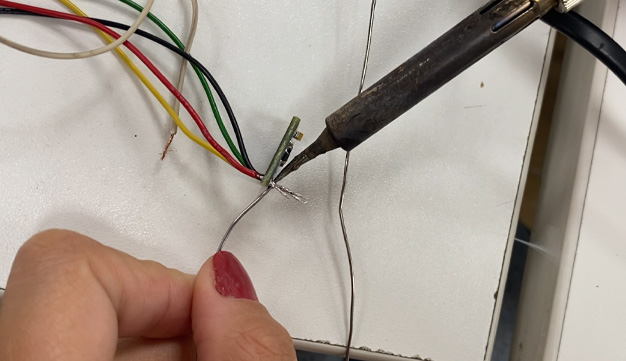
En esta etapa, probamos cómo funcionaba el proyecto, ajustamos algunos elementos del programa y verificamos la velocidad de la silla de ruedas al moverse hacia adelante y hacia atrás.
Abril, 2024
VIGÉSIMO OCTAVA
CLASE
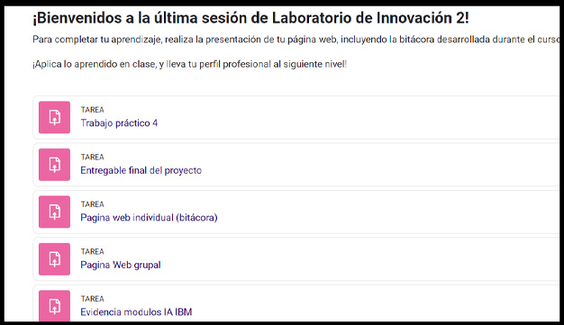
En esta sesión, el profesor nos explicó el cronograma de entregas tanto grupales como individuales, especificando las fechas para asegurar una conclusión exitosa del curso.